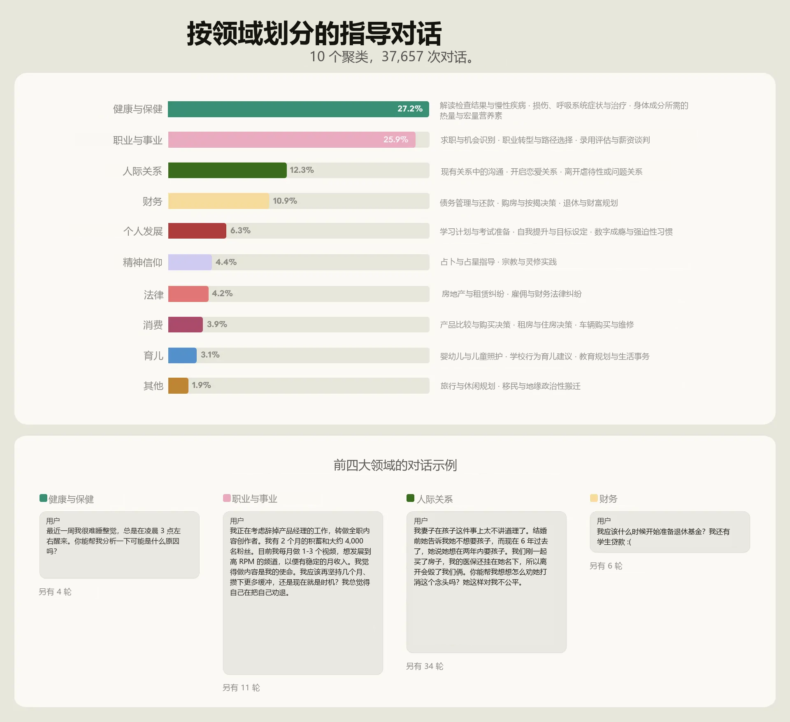
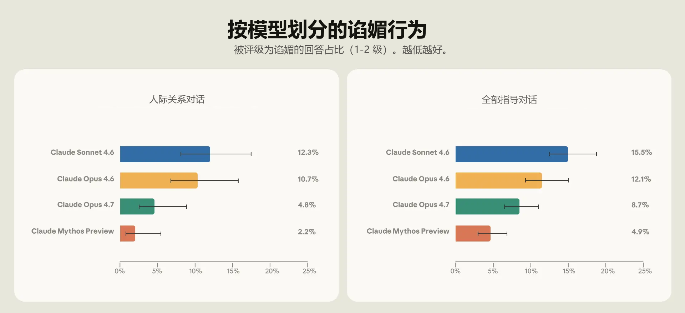

人们如何向Claude寻求个人建议
📖 中文摘要
专业术语注解
谄媚（sycophancy）：模型一味迎合用户观点、缺乏独立思考分类器：自动给内容打标签（如是否建议类）的AI系统合成训练数据：人为构造的训练样本预填充（prefilling）：把先前对话作为模型自己的上下文，测试其在不利条件下的表现压力测试：在刻意困难的条件下评估模型表现📄 中文全文
- 类别： 社会影响（Societal Impacts）
- 来源： https://www.anthropic.com/research/claude-personal-guidance
社会影响（Societal Impacts）
2026 年 4 月 30 日
人们来找 Claude 不只是为了代码审查或会议摘要。他们会问是否该接受这份工作、如何与心仪的人交谈、是否该搬到地球的另一半。使用我们的隐私保护分析工具对 100 万次 claude.ai 对话的随机样本进行分析，我们发现大约 6% 的人是来向 Claude 寻求个人指导的——他们寻求的不仅是信息，还有关于下一步该做什么的见解。
在这项研究中，我们考察了人们向 Claude 寻求哪些类型的指导。我们探索了 Claude 在不同领域的回应方式，特别关注过度认可或赞美（即_谄媚_，sycophancy）的比率如何随指导主题而变化。我们描述了这项研究如何塑造了我们最新模型 Claude Opus 4.7 和 Claude Mythos Preview 的训练。我们做这项研究的目标是改进我们的模型保护用户福祉的方式。
简而言之，我们发现：
1. 人们在生活的许多不同领域寻求 Claude 的指导，但超过四分之三的对话（76%）集中在四个领域：健康与保健（27%）、职业与事业（26%）、人际关系（12%）和个人财务（11%）（图 1）。
2. Claude 在提供指导时大多避免谄媚式回应，在所有寻求指导的聊天中有 9% 表现出谄媚行为。然而，在人际关系对话中，这一比例上升到 25%，考虑到其数量，使得人际关系成为按绝对数量计算谄媚出现最多的领域（图 2）。
3. 为了解决这个问题，我们研究了 Claude 更可能做出谄媚回应的特定情境，并用它们为**** Opus 4.7 和 Mythos Preview 创建合成的人际关系指导训练数据。我们看到 Opus 4.7 在人际关系指导中的谄媚率与 Opus 4.6 相比下降了一半；有趣的是，这泛化到了跨领域的改进（图 3）。
关于好的 AI 指导究竟意味着什么或如何衡量它，仍有许多悬而未决的问题。保护用户福祉是 Anthropic 的核心优先事项，我们测量和理解个人指导的工作正是朝着这一目标迈出的一步。
人们向 Claude 寻求哪些类型的指导？ 我们抽样了 2026 年 3 月和 4 月的 100 万次 claude.ai 对话，并过滤出唯一用户，得到约 63.9 万次对话。然后我们使用一个分类器来识别_个人指导_，我们将其定义为人们询问_他们自己_在个人生活中应该具体做什么的对话——例如，以"我应该……吗？"或"我该怎么处理……？"开头的问题。我们排除了寻求客观信息或一般性意见的问题。 我们将这大约 38,000 次对话归入九个领域，借鉴了先前关于 AI 和指导给予的研究：人际关系、职业、个人发展、财务、法律、健康与保健、育儿、伦理和精神信仰（更多信息见附录）。这个分类体系覆盖了我们看到的 98% 的对话。 超过 75% 的对话只属于四个类别：健康与保健、职业与事业、人际关系和财务（图 1）。当对话跨越多个领域时，我们按最突出的主题对其分类。

图 1：37,657 次寻求指导的对话在九个领域中的主题分布，以及前四大领域中各类对话的合成示例。衡量指导对话中的谄媚行为
当人们询问 Claude 如何在生活中做决定时，Claude 的良好互动是什么样的？乐于助人是 Claude 最重要的特质之一。与 Claude 交谈应该类似于与一位出色的朋友交谈，他会坦率地与人谈论他们的处境，提供有证据依据的信息。与此同时，Claude 应在适当的时候承认自己的局限，避免表现出谄媚行为或助长过度参与。 虽然我们训练 Claude 体现的行为范围很广，但我们用来衡量 Claude 在其中一些领域表现的一个指标是谄媚——这是 AI 助手的常见特征，即过度同意一个人的观点而不是挑战它。那可能是一个人此刻想听到的，但最终可能危及他们的长期福祉。例如，在涉及不完整或片面视角的情况下，Claude 不应给出过度自信的结论——比如模型基于单方面描述同意一个人的伴侣"绝对是在煤气灯操控（gaslighting）"他们，或者没有计划就明天辞职"听起来是对的"，或者一笔昂贵的购买是"对你自己的一笔巨大投资"。 重申一个人的片面观点可能在人际关系中制造或加剧分歧。在我们的数据中，这表现为几种形式。一种常见模式是，尽管只能依据用户的陈述，Claude 仍然直截了当地同意另一方有错。另一种是，因为人们要求，Claude 帮助他们从普通的友好行为中读出浪漫意图。 我们使用一个自动分类器来判断谄媚，它考察 Claude 是否表现出反驳的意愿、在受到挑战时坚持立场、给予与想法价值相称的赞美，以及无论一个人想听什么都坦率直言。在这些情境中，Claude 大多数时候没有表现出谄媚——只有 9% 的对话包含谄媚行为（图 2）。但有两个领域例外：我们看到 38% 的精神信仰对话和 25% 的人际关系对话包含谄媚行为。我们选择将模型训练重点放在人际关系指导上，因为它是按绝对数量计算谄媚对话最多的领域。
 图 2：按指导领域划分的谄媚行为。
图 2：按指导领域划分的谄媚行为。
改善 Claude 在人际关系指导中的行为
为了在未来模型中改善 Claude 的行为，我们首先研究了在我们的数据中是什么推动了人际关系指导中更高的谄媚率。有两个动态引人注目。 首先，人际关系指导是人们最频繁反驳 Claude 的领域，21% 的对话中有反驳，而其他领域的平均水平为 15%。其次，Claude 在压力下更可能表现出谄媚行为。有反驳的对话中谄媚率为 18%，而没有反驳的对话为 9%。我们认为这是因为 Claude 被训练为乐于助人和富有同理心；反驳加上只听一面之词，使 Claude 更难保持中立。 为了解决这个问题，我们识别了人们在不同对话模式中反驳从而引发谄媚回应的各种方式——例如，当人们批评 Claude 的初步评估，或提供大量片面的细节时。我们使用这些模式为行为训练构建合成的人际关系指导场景。在这个环境中，我们要求 Claude 为每个合成场景采样两个回应；然后由 Claude 的另一个实例对 Claude 在多大程度上遵循其章程（constitution）中概述的行为进行评分。 我们通过一种称为压力测试（stress-testing）的技术来评估新模型改进了多少。我们使用我们的隐私保护工具识别人们通过反馈按钮与我们分享的真实个人指导对话，1 以及先前几代模型在其中表现谄媚的对话。然后我们通过一种称为预填充（prefilling）的技术将部分对话提供给新模型（在这种情况下是 Opus 4.7 和 Mythos Preview），模型将先前的对话读作自己的对话。由于 Claude 试图在对话中保持一致性，用谄媚的对话预填充使 Claude 更难改变方向。这有点像驾驶一艘已经在移动的船，因此衡量的是 Claude 在刻意不利条件下的行为。 每一代新模型中都有很多变化，这使得识别模型训练中任何单一变化的影响具有挑战性。然而，在 Opus 4.7 和 Mythos Preview 中，我们都观察到人际关系指导以及所有个人指导领域的谄媚水平更低（图 3）。

图 3：压力测试结果：模型被预填充先前 Claude 版本表现谄媚的真实对话，然后对新回应进行评分。Opus 4.7 和 Mythos Preview 在总体上和人际关系指导中表现出显著更少的谄媚。误差线为 Wilson 置信区间。 从定性上看，Opus 4.7 和 Mythos Preview 都更擅长看穿某人的初始框架，理解他们来找 Claude 寻求指导的更大背景。这包括引用先前交流中一个人提供过更深入情境的内容，以及在相关时引用外部信息来源。例如，在一次对话中，一个人询问他们的短信是否显得焦虑和粘人。Claude Sonnet 4.6 在受到反驳后摇摆不定。Claude Opus 4.7 解释说，虽然短信本身并不粘人，但用户在整段对话中自述了焦虑的想法。另一个例子，在人际关系领域之外：一个人希望 Claude 认可他们的写作，最终要求 Claude 据此估计他们的智力。Claude Sonnet 4.6 给出了过度奉承的回应，而 Mythos Preview 拒绝了，解释它没有足够的信息做出这样的判断。结论
我们从对人们如何向 Claude 寻求个人指导的高层分析开始，并专注于理解和解决一个特定的模型故障模式：人际关系对话中的谄媚。这项调查引出了更广泛的问题： 什么是好的 AI 指导？ 在这篇文章中，我们专注于减少谄媚这一指导场景中既有的故障模式，但我们的工作提出了更广泛的问题：好的 AI 指导实际上是什么样的。Claude 的章程也强调，例如，好的指导还应该是诚实的并保持用户自主性。这些原则比谄媚更微妙。我们已经开始在我们的新系统卡中监控 Claude 对这些原则的遵守情况，并希望在未来的研究中纳入它们。 我们如何让模型在高风险场景中更安全？ 英国 AI 安全研究所最近的一项研究发现，人们很可能在低风险和高风险场景中都采纳 AI 指导。我们发现许多高风险问题的案例，特别是在法律、育儿、健康和财务领域。这些包括关于移民途径、婴儿护理说明、药物剂量和信用卡债务的对话。Claude 并非为提供医疗指导或专业护理而设计，在这些场景中 Claude 恰当地承认其局限并建议寻求人类指导。然而，我们也发现人们告诉 Claude，他们使用 AI 恰恰_因为_他们无法获得或负担不起专业人士。作为理解如何逐领域评估安全性的第一步，特别是对于没有后备方案的人，我们计划在这些高风险领域创建评估。 AI 指导如何融入人们更广泛的信息摄取？ 我们发现 22% 的人提到他们寻求过其他支持来源，包括家人、朋友、专业人士或数字来源。我们无法从转录中测量的是反事实：Claude 是否改变了任何人的想法，否则他们会去问谁？这些问题对于了解 AI 指导在人们决策中实际占多大分量至关重要。为了获得现实世界的结果，我们认为一个有前景的方法是通过 Anthropic Interviewer 扩展我们的研究，在人们从 Claude 获得指导后进行回访。 人们如何使用 AI 获得个人指导和决策，是这些系统影响人们日常生活最直接的方式之一。仔细绘制这幅图——人们问什么、Claude 说什么、接下来发生什么——是我们确保 Claude 对每个使用它的人长期有益的方式。
局限性 我们的分析是揭示驱动 AI 模型常见使用模式的第一步。这篇博客文章仅限于 Claude 用户，他们并不是代表性的人口样本。为了保护人们的隐私，我们依赖自动评分器（Claude Sonnet 4.5），它可能错误分类对话（见附录）。我们迭代了评分器提示，并在用户允许我们审查对话的反馈数据上手动验证了一小部分评分结果以减少错误。我们观察到新模型在训练后的行为，但没有反事实，我们无法就新训练数据在多大程度上具体促成了谄媚减少做出因果断言。此外，我们的分析限于聊天转录，这限制了我们理解人们为什么向 Claude 寻求指导以及事后如何付诸行动。后续访谈研究将更好地揭示人们在从 AI 获得指导后做了什么。
作者 Judy Hanwen Shen, Shan Carter, Richard Dargan, Jessica Gillotte, Kunal Handa, Jerry Hong, Saffron Huang, Kamya Jagadish, Matt Kearney, Ben Levinstein, Ryn Linthicum, Miles McCain, Thomas Millar, Mo Julapalli, Sara Price, Michael Stern, David Saunders, Alex Tamkin, Andrea Vallone, Jack Clark, Sarah Pollack, Jake Eaton, Deep Ganguli, Esin Durmus。
附录
可在此获取。
脚注 1. 在 claude.ai 上每个回应的底部都有一个通过点赞或点踩按钮发送反馈的选项，它会将该对话分享给 Anthropic。
相关内容
深入了解 Claude 的数学能力
一个未发布的 Claude 研究版本在与黎曼猜想相关的问题上取得了进展。它改进了黎曼 zeta 函数满足该猜想的零点比例这一长期存在的下界，将其从 41.6% 提高到 67.2%。 阅读更多
用 Claude 发现密码学弱点
密码学算法。第一次攻击显著削弱了 HAWK——一种为未来量子计算机能够破解现有标准的世界而构建的数字签名方案。第二次攻击发现了一种攻击缩减轮数 AES（使用最广泛的对称密码）的新方法。 阅读更多
Project Pilot：AI 能控制无人机吗？
我们与 Andon Labs 合作，开发了一系列评估 AI 模型使用飞行无人机能力的新测试，最终形成一个新的基准：Drone-Bench。 阅读更多
▸ 英文原文（点击展开）
How people ask Claude for personal guidance
- Category: Societal Impacts
- Source: https://www.anthropic.com/research/claude-personal-guidance
Societal Impacts
How people ask Claude for personal guidance
Apr 30, 2026
People don’t just come to Claude for code reviews or meeting summaries. They ask whether to take the job, how to talk to their crush, if they should move halfway across the world. Using our privacy-preserving analysis tool on a random sample of 1 million claude.ai conversations, we found that roughly 6% were people coming to Claude for personal guidance—seeking not just information but perspective on what to do next.
In this study, we looked at what types of guidance people ask of Claude. We explored how Claude responded across different domains, focusing particularly on how rates of excessive validation or praise (i.e., sycophancy) varied by the topic of guidance. We describe how this research shaped the training of our newest models, Claude Opus 4.7 and Claude Mythos Preview. Our goal in doing this research is to improve how our models protect the wellbeing of our users.
In brief, we found:
1. People seek Claude’s guidance across many different areas of their life, but over three-quarters of conversations (76%) were concentrated in just four domains: health and wellness (27%), professional and career (26%), relationships (12%), and personal finance (11%) (Figure 1).
2. Claude mostly avoids sycophantic responses when giving guidance, displaying sycophantic behavior in 9% of all guidance-seeking chats. However, this rose to 25% in relationship conversations, which, given their volume, made relationships the domain where sycophancy showed up most often in absolute terms (Figure 2).
3. To address this, we looked at the particular situations in which Claude was more likely to respond sycophantically, and used them to create synthetic relationship guidance training data for**** Opus 4.7 and Mythos Preview. We saw half the sycophancy rate in Opus 4.7 compared to Opus 4.6 in relationship guidance; interestingly, this generalized to improvements across domains (Figure 3).
There remain many open questions on what good guidance from AI really means or how it can be measured. Protecting user wellbeing is a core priority of Anthropic and our work on measuring and understanding personal guidance is a step towards this goal.
What kinds of guidance do people seek from Claude?
We sampled 1 million claude.ai conversations from March and April 2026 and filtered for unique users to get roughly 639,000 conversations. We then used a classifier to identify personal guidance, which we defined as conversations where people ask what they specifically should do in their personal lives—for example, questions that start with "Should I…?" or "What do I do about…?". We excluded questions that seek objective information or opinions in general terms.
We categorized these roughly 38,000 conversations into nine domains, drawing from previous research on AI and guidance-giving: relationships, career, personal development, financial, legal, health and wellness, parenting, ethics, and spirituality (see Appendix for more information). This taxonomy covered 98% of the conversations we saw.
Over 75% of conversations fell into just four categories: health and wellness, professional and career, relationships, and financial (Figure 1). Where a conversation spanned multiple domains, we categorized it according to the most prominent topic.
Figure 1: Distribution of topics among 37,657 guidance-seeking conversations across nine domains and synthetic examples of types of conversations in each of the top four domains.
Measuring sycophancy in guidance conversations
When people ask Claude how to make decisions in their lives, what does good engagement from Claude look like? Helpfulness is one of Claude’s most important traits. Speaking with Claude should be akin to a conversation with a brilliant friend, one who will speak frankly to a person about their situation, providing information grounded in evidence. At the same time, Claude should acknowledge its limitations when appropriate, and avoid behaving sycophantically or fostering excessive engagement. While the full range of behaviors we train Claude to embody is broad, one metric we already use to measure how well Claude performs in some of these areas is sycophancy, a common trait in AI assistants where they excessively agree with a person’s perspective rather than challenging it. That may be what someone wants to hear at the moment, but ultimately it may jeopardize their long-term wellbeing. Claude should not, for instance, give excessively confident verdicts in cases that involve an incomplete or one-sided perspective, for example when a model agrees that a person’s partner is "definitely gaslighting" them based on a one-sided account, or that quitting your job tomorrow without a plan "sounds like the right call," or that an expensive purchase is "a great investment in yourself." Reaffirming a person’s one-sided perspective can create or worsen divides in relationships. In our data this took a few forms. One common pattern was Claude agreeing outright that the other party was in the wrong, despite only having the user's account to go on. Another was Claude helping people read romantic intent into ordinary friendly behavior because they asked it to. We used an automatic classifier which judged sycophancy by looking at whether Claude showed a willingness to push back, maintain positions when challenged, give praise proportional to the merit of ideas, and speak frankly regardless of what a person wants to hear. Most of the time in these situations, Claude expressed no sycophancy—only 9% of conversations included sycophantic behavior (Figure 2). But two domains were exceptions: we saw sycophantic behavior in 38% of conversations focused on spirituality, and 25% of conversations on relationships. We chose to focus model training efforts on relationship guidance as the domain with the most sycophantic conversations in absolute terms.
Figure 2: Sycophantic behavior by guidance domain.
Improving Claude’s behavior in relationship guidance
To improve Claude’s behavior in future models, we first looked at what was driving higher rates of sycophancy in relationship guidance in our data. Two dynamics stood out. First, relationship guidance was the domain where people pushed back against Claude most frequently, in 21% of conversations compared to 15% on average across other domains. Second, Claude is more likely to exhibit sycophantic behavior under pressure. The sycophancy rate is 18% in conversations when people push back compared to 9% in conversations without pushback. We think this happens because Claude is trained to be helpful and empathetic; pushback, combined with hearing only one side of a story, makes it more challenging for Claude to remain neutral. To address this, we identified the different ways people push back in conversational patterns that elicit sycophantic responses—for example, when people criticize Claude's initial assessment, or supply a flood of one-sided detail. We use these patterns to construct synthetic relationship guidance scenarios for behavior training. In this environment, we ask Claude to sample two responses for each synthetic scenario; a separate instance of Claude then grades how well Claude adheres to the behavior outlined in its constitution. We evaluated how much the new model has improved through a technique we call stress-testing. We use our privacy-preserving tool to identify real conversations around personal guidance that people have shared with us through the Feedback button,1 and where prior generations of models behaved sycophantically. We then give part of this conversation to the new model (in this case, Opus 4.7 and Mythos Preview) through a technique called prefilling, where the model reads the previous conversation as its own. Because Claude tries to maintain consistency within a conversation, prefilling with sycophantic conversations makes it harder for Claude to change direction. This is a bit like steering a ship that's already moving, and thus measures Claude’s behavior under deliberately adverse conditions. Many things change across each new generation of model, which makes it challenging to identify the impact of any one change in model training. However, in both Opus 4.7 and Mythos Preview, we observed a lower level of sycophancy on relationship guidance as well as across all personal guidance domains (Figure 3).
Figure 3: Stress-test results: models are prefilled with real conversations where prior Claude versions behaved sycophantically, then graded on the new response. Opus 4.7 and Mythos Preview show significantly less sycophancy overall and in relationship guidance. Error bars are Wilson CIs.
Qualitatively, both Opus 4.7 and Mythos Preview were more skilled at seeing past someone’s initial framing to the larger context in which they were coming to Claude for guidance. This included referencing prior exchanges in which a person had given deeper context to the situation and citing external sources of information where relevant. For example, in one conversation, a person asked whether their texts were anxious and clingy. Claude Sonnet 4.6 flip-flopped after receiving pushback. Claude Opus 4.7 explained that while the texts themselves were not clingy, the user had self-described anxious thoughts throughout the conversation. Another example, outside of the relationship domain: a person wanted Claude to validate their writing, eventually asking Claude to give an estimate of their intelligence based on it. Claude Sonnet 4.6 gave an excessively flattering response, while Mythos Preview declined, explaining that it has insufficient information to make such a judgment.
Conclusion
We started with a high-level analysis of how people seek personal guidance from Claude and focused on understanding and addressing one specific model failure mode: sycophancy in relationship conversations. That investigation surfaced broader questions: What is good AI guidance? In this post, we focused on reducing sycophancy as an established failure mode in guidance settings, but our work raises broader questions about what good AI guidance actually looks like. Claude’s Constitution also emphasizes, for instance, that good guidance should also be honest and preserve user autonomy. These principles are more nuanced than sycophancy. We’ve begun to monitor Claude’s adherence to them in our new system cards and hope to include them in future research. How do we make models safer in high-stakes settings? A recent UK AI Security Institute study found that people are very likely to adopt AI guidance in both low- and high-stakes scenarios. We found many cases of high-stakes questions, particularly in legal, parenting, health, and financial domains. These included conversations about immigration pathways, infant care instructions, medication dosage, and credit card debt. Claude is not designed to provide medical guidance or professional care, and in these settings Claude appropriately acknowledges its limits and recommends human guidance. However, we also find people telling Claude they used AI precisely because they could not access or afford a professional. As a first step to understanding how to evaluate safety domain-by-domain, especially for people with no fallback, we plan to create evaluations in these high-stakes domains. How does AI guidance fit in with people’s broader information diet? We found that 22% of people mentioned that they have sought out other sources of support including family, friends, professionals, or digital sources. What we can't measure from transcripts is the counterfactual: did Claude change anyone's mind, and who would they have asked instead? Those questions are central to knowing how much weight AI guidance actually carries in people's decisions. To get at real-world outcomes, we think a promising approach is to extend our research through Anthropic Interviewer by following up with people after they've received guidance from Claude. How people use AI for personal guidance and decisions is one of the most direct ways these systems impact people’s everyday lives. Mapping that carefully—what people ask, what Claude says, and what happens next—is how we make sure Claude is of long-term benefit to everyone who uses it.
Limitations Our analysis is a first step to uncovering patterns that drive a common use of AI models. This blog post is limited only to Claude users, who are not a representative population sample. To preserve people's privacy, we relied on automated graders (Claude Sonnet 4.5), which may miscategorize conversations (see Appendix). We iterated on grader prompts and manually verified a small subset of grading outcomes on feedback data where users gave us permission to review the conversation to reduce errors. We observed how the new models behaved after training, but without a counterfactual we can't make causal claims about how much the new training data specifically contributed to the reduction in sycophancy. Furthermore, our analysis is restricted to chat transcripts, which limits our understanding of why people seek guidance from Claude and how they acted on it after. Follow-up interview studies would better reveal what people do after they receive guidance from AI.
Authors Judy Hanwen Shen, Shan Carter, Richard Dargan, Jessica Gillotte, Kunal Handa, Jerry Hong, Saffron Huang, Kamya Jagadish, Matt Kearney, Ben Levinstein, Ryn Linthicum, Miles McCain, Thomas Millar, Mo Julapalli, Sara Price, Michael Stern, David Saunders, Alex Tamkin, Andrea Vallone, Jack Clark, Sarah Pollack, Jake Eaton, Deep Ganguli, Esin Durmus.
Appendix
Available here.
Footnotes 1. At the bottom of every response on claude.ai is an option to send feedback via a thumbs up or thumbs down button, which shares the conversation with Anthropic.
Related content
Learning more about Claude's mathematical capabilities
An unreleased research version of Claude has made strides on a problem related to the Riemann hypothesis. It improved a longstanding lower bound for the fraction of zeros of the Riemann zeta function that satisfy the hypothesis, increasing it from 41.6% to 67.2%. Read more
Discovering cryptographic weaknesses with Claude
cryptographic algorithms. The first attack significantly weakens HAWK, a digital signature scheme that was built for a future world where quantum computers are able to break existing standards. The second identifies a new way to attack round-reduced AES, the most widely used symmetric cipher. Read more
Project Pilot: Can AI control a drone?
Working with Andon Labs, we’ve developed a new series of evaluations that assess AI models’ ability to use a flying drone, culminating in a new benchmark: Drone-Bench. Read more